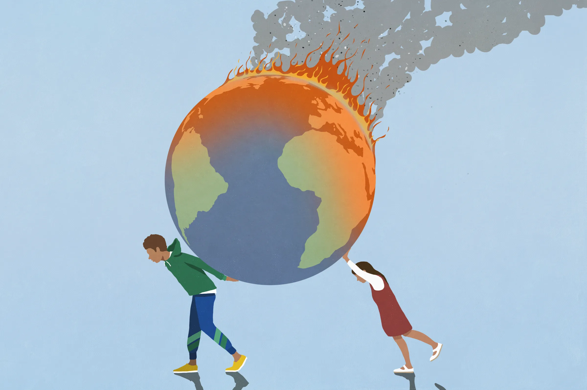
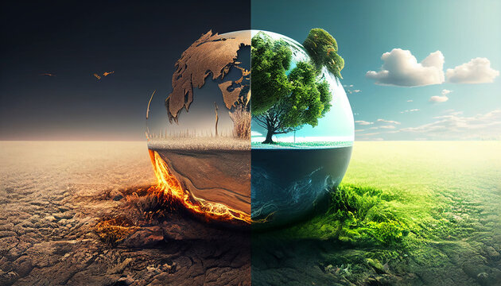
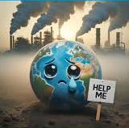
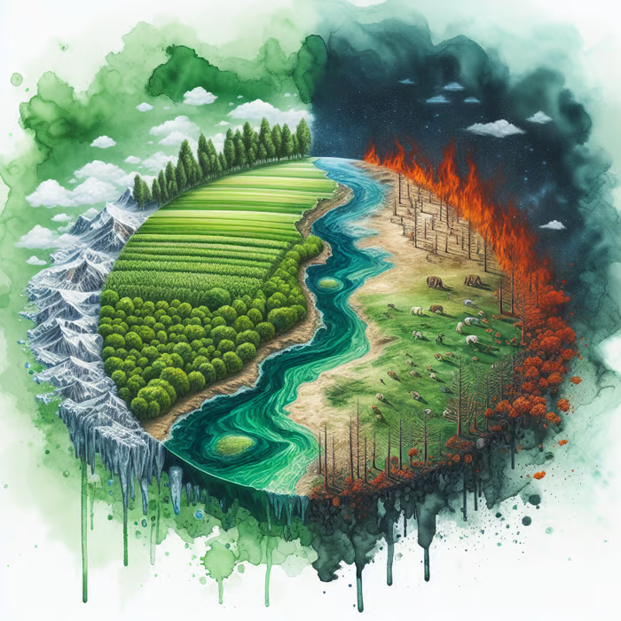

The Hidden Impact of Methane on Our Environment and Health
Scroll down to see the story.
Introduction:
Methane, a colorless and odorless gas, is often overshadowed by carbon dioxide in
discussions about climate change. However, it is a potent greenhouse gas with a global
warming potential significantly greater than that of carbon dioxide over a shorter timeframe.
Understanding methane's sources and its effects on the environment and human health
is crucial for developing effective strategies to mitigate its impact.

Rising Action:
Methane emissions originate from various sources, with agriculture being the largest
contributor. Livestock digestion, particularly through enteric fermentation in ruminants
like cows and sheep, releases significant amounts of methane into the atmosphere.
Additionally, manure management practices contribute to methane production as organic matter
decomposes anaerobically.
Beyond agriculture, methane is also emitted from landfills, natural gas extraction and
distribution, wetlands, and certain industrial processes. As these emissions accumulate in
the atmosphere, they contribute to air pollution and climate change.
The environmental consequences of increased methane levels are alarming. Methane traps heat
in the atmosphere much more effectively than carbon dioxide—over 25 times more effective
over a century—leading to accelerated global warming. This rise in temperature can disrupt
weather patterns, increase the frequency of extreme weather events, and threaten
biodiversity.

Climax:
The health implications of methane emissions are equally concerning. As a precursor to
ground -level ozone formation—a harmful air pollutant—methane contributes to respiratory
problems such as asthma and other chronic lung diseases. Communities located near
high -emission areas—such as farms or landfills—face heightened health risks due to poor air
quality.
Moreover, as climate change progresses due to rising methane levels, public health risks
will likely expand further. Increased temperatures may lead to more heat -related illnesses
while also exacerbating vector -borne diseases like malaria or dengue fever due to shifting
habitats for disease -carrying organisms.

Falling Action:
Recognizing these threats has led scientists and policymakers to advocate for strategies
aimed at reducing methane emissions. Innovations in agricultural practices such as improved
feed efficiency for livestock can lower enteric fermentation rates. Additionally, better
manure management techniques can minimize methane production from waste.
On a broader scale, transitioning from fossil fuels towards renewable energy sources can
significantly cut down on methane emitted during natural gas extraction processes. Public
awareness campaigns are essential for educating communities about reducing food
waste—another critical source of methane when organic materials decompose in landfills.

Resolution:
Addressing the challenges posed by methane requires a multi -faceted approach involving
cooperation between governments, industries, farmers, and consumers alike. By understanding
the profound effects that this potent greenhouse gas has on our environment and health—and
taking action accordingly—we can work towards a healthier planet for future generations.
As we continue our journey toward sustainability and climate resilience, recognizing the
role of methane is not just an environmental issue; it’s also an urgent public health
concern that warrants immediate attention.